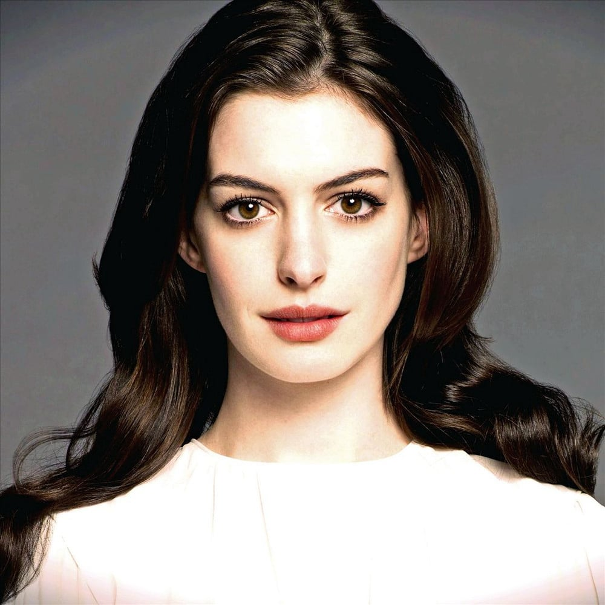

Anne Hathaway
Born: 12 November 1982
Age:
Years Active: 1997-present
Anne Jacqueline Hathaway (born November 12, 1982) is an American actress. Her accolades include an Academy Award, a British Academy Film Award, a Golden Globe Award, and a Primetime Emmy Award. Her films have grossed over $6.8 billion worldwide, and she appeared on the Forbes Celebrity 100 list in 2009. She was among the world's highest-paid actresses in 2015.
Hathaway performed in several plays in high school. As a teenager, she was cast in the television series Get Real (1999–2000) and made her breakthrough by playing the lead role in the Disney comedy The Princess Diaries (2001). After starring in a string of family films, including Ella Enchanted (2004), Hathaway made a transition to mature roles with the 2005 drama Brokeback Mountain. The comedy-drama The Devil Wears Prada (2006), in which she played an assistant to a fashion magazine editor, was her biggest commercial success to that point. She played a recovering addict in the drama Rachel Getting Married (2008), which earned her a nomination for the Academy Award for Best Actress.
Hathaway had further commercial success in the comedy Get Smart (2008), the romances Bride Wars (2009), Valentine's Day (2010), and Love & Other Drugs (2010), and the fantasy film Alice in Wonderland (2010). In 2012, she starred as Catwoman in her highest-grossing film, The Dark Knight Rises, and played Fantine, a prostitute dying of tuberculosis, in the musical Les Misérables, for which she won the Academy Award for Best Supporting Actress. She has since starred in the films Interstellar (2014), The Intern (2015), Ocean's 8 (2018), The Hustle (2019), The Idea of You (2024), and in the miniseries WeCrashed (2022).
Hathaway has won a Primetime Emmy Award for her guest voice role on The Simpsons, sung for soundtracks and appeared on stage. She is a board member of the Lollipop Theatre Network, an organization that brings films to children in hospitals, and she advocates for gender equality as a UN Women goodwill ambassador.
.webp )
The End of Oak Street (2026)
.webp )
Mother Mary (2026)
.webp )
The Odyssey (2026)

Solos (2021)

Serenity (2019)

The Hustle (2019)

The Intern (2015)

Interstellar (2014)

Rio 2 (2014)

The Dark Knight Rises (2012)

Rio (2011)

Get Smart (2008)

Hoodwinked! (2005)

Ella Enchanted (2004)